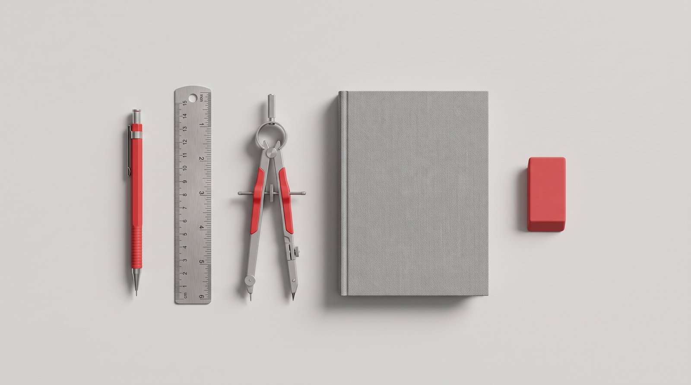

i make ai work.
I turn AI into ordinary, reliable capability: custom systems, production pipelines, honest numbers. I ship with these tools every day.

many tools. one system.
Briefing 002 — the custom OSYour company already pays for a dozen good products. They just don't talk to each other. I wire them into one operating system that runs the way you run. One login, your data stays yours.

your operating system
One piece of software that knows your projects and your data, and drives every tool on the left.
what i do
Services / 01–05ai strategy
- Audits that show where AI actually pays off
- Roadmaps with budgets, owners and kill criteria
- Model and platform selection, vendor-neutral
custom systems & control centres
- Bespoke operating systems, built for your company alone → see the system
- Control centres: one place to run the operation from
- Internal tooling your team will actually open twice
production pipelines
- AI image and video pipelines, wired into real post-production
- ComfyUI systems, LoRA training, brand-safe workflows
- Built by a working filmmaker, not a slide-deck theorist
cost management
- Spend audits: what you pay for, what you use, what to cut
- Build-vs-buy calls with honest numbers
- ROI as a figure, not a feeling
training & enablement
- Hands-on training, role by role. Not a webinar.
- Playbooks your staff keep using after I leave
- Leadership briefings in plain language

how i work
Process / 3 phasesaudit
Two weeks with your teams, mapping real workflows. You get a written brief with numbers, not vibes.
build
I build the highest-value systems myself, in your stack, shipped in weekly increments you can veto.
embed
I train your people, document everything, and step back. Optional retainer as the models change.

why a custom setup
Position statementOff-the-shelf AI makes every company equally average. I build around the way yours actually works: software your competitors can't subscribe to.
the human
Personnel fileNicolas Lekai
AI Systems ArchitectBuilds custom operating systems, control centres and bespoke tools: the software a company runs on, made for that company alone.
Nicolas Lekai
Director — Film · AI · VFXThe same person, behind the camera: director for AI film, VFX and post-production. nicolaslekai.com